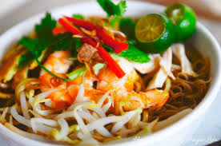
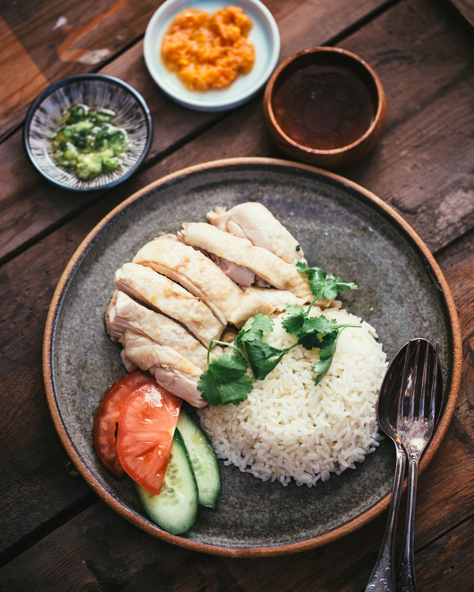
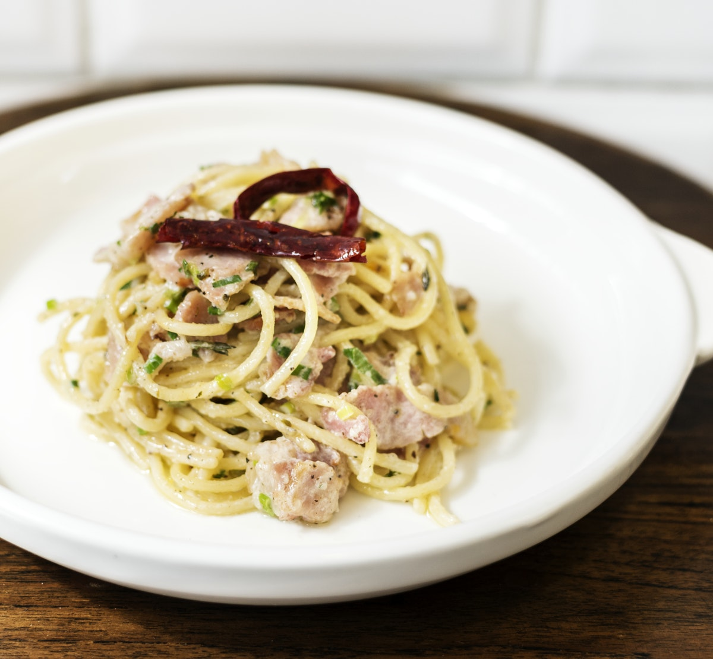
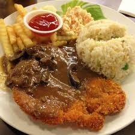
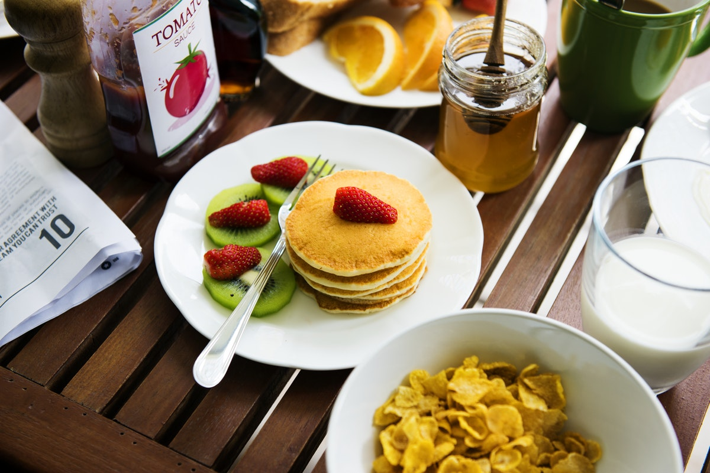
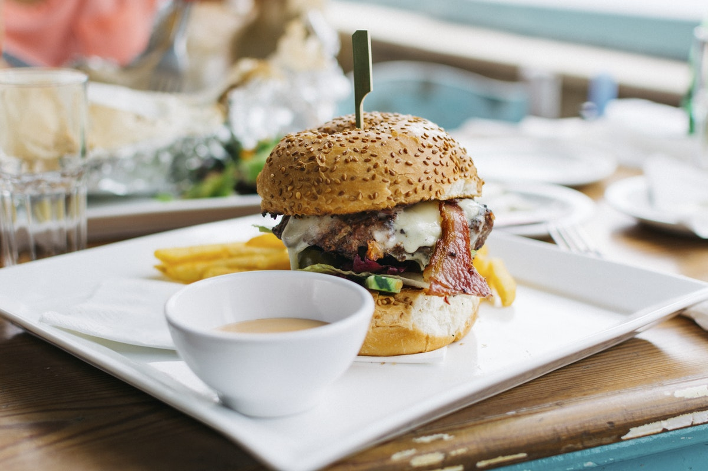
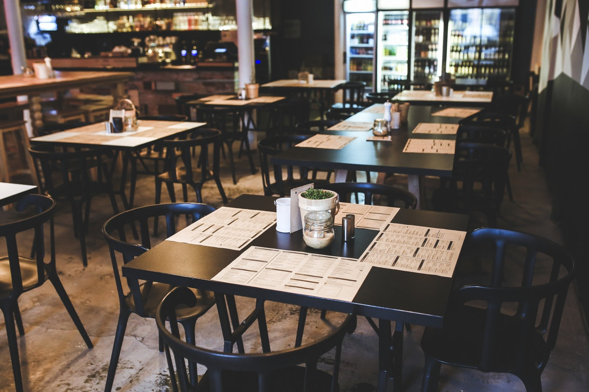

THE MENU
Nasi Lemak Special New!RM 6.00

An East Asian fragrant rice dish cooked in coconut milk & pandan leaf. This national dish comes with sambal, fried chicken, spicy anchovy, peanut, egg and a slices of cucumber.
Kerabu Rice Popular!RM 6.00

Kerabu Rice dish is rice, which was originally bluish color, and usually eaten with dried fish or chicken fried, crackers, budu ulam-mistress and others. Blue rice resulting from Telang flowers used in cooking. . Difficulty providing its color now, because it is provided with regular white rice or nasi kerabu yellow color cooked with turmeric.
Sarawak Laksa Hot!RM 6.00
It is made using a laksa paste consisting of sambal belacan, tamarind, lemongrass, herbs and spices with a little coconut milk. Hence, it has a fine balance of aromatic herbs and spices with a subtle hint of sourish and chili note and not overly rich and creamy.
Hainanese Chicken Rice Popular!RM 6.00
This three-in-one dish (chicken, rice, and soup) originated in Hainan, a tropical island off China's southern coast, and has become a culinary staple in Malaysian culture.
Malaysian Spaghetti Carbonara New!RM 10.00
This dish is a deli egg-bacon-and-cheese-on-a-roll that has been pasta-fied, fancified and fetishized.
Deep Fried Chicken Chop Hot!RM 10.00
Accompanied with coleslaw , french fries & choices of black pepper sauce or mushroom sauce.
Yummy Pancake Hot!RM 7.00
"Tall and fluffy. These pancakes are just right. Topped with strawberries and whipped cream, they are impossible to resist."
Yumz Burger Popular!RM 7.00
Sink your teeth into a delicious restaurant-style, hamburger recipe made from lean beef with cheese. Skip the prepackaged patties and take the extra time to craft up your own, and that little extra effort will be worth it.
About
The Poingkaa Kitchen was founded The key to our success is simple: providing quality consistent food that taste great every single time. We pride ourselves on serving our customers delicious genuine dishes like: Local Cuisine & Western Cuisine
The Chef? Miss Angelica
We are proud of our interiors.
Opening Hours
Open everyday except sunday
Monday 10.00 - 24:00
Tuesday 10:00 - 24:00
Wednesday 10:00 - 24:00
Thursday 10:00 - 24:00
Friday 10:00 - 14:00
Saturday 10:00 - 14:00
Sunday Closed

Contact
Find us at some address at some place or call us at 05050515-122330
FYI! We offer full-service catering for any event, large or small. We understand your needs and we will cater the food to satisfy the biggerst criteria of them all, both look and taste.
Reserve a table, ask for today's special or just send us a message: